4. Deep Learning Fundamentals
Neurons, activation functions, forward propagation, loss functions, gradient descent, backpropagation, overfitting
1. Why Deep Learning?
Classical computer vision methods rely on hand-crafted features such as SIFT, HOG, and Haar-like features. While computationally cheap, they suffer from critical limitations that deep learning overcomes.
| Limitation of Classical Methods | Deep Learning Solution |
|---|---|
| Inflexible hand-crafted features | Learns features directly from data |
| Poor multi-class performance | Softmax naturally supports many classes |
| Sensitive to viewpoint, scale, illumination, occlusion | Learned invariances from large datasets |
| Cannot handle intra-class variation | Hierarchical representations capture variation |
2. The Neuron: Basic Building Block
Biological Inspiration
Neural networks are loosely inspired by the brain. The key insight is that connections (not the neurons themselves) encode knowledge. In artificial neural networks, connection strengths are called weights.
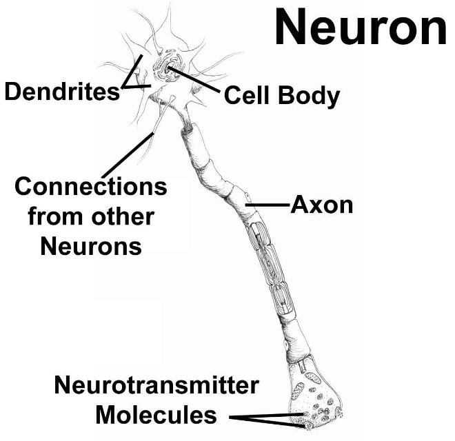
Artificial Neuron
An artificial neuron takes weighted inputs, adds a bias, then applies an activation function:
The bias $b$ shifts the activation threshold. Without bias, neurons can only model functions passing through the origin. A bias of $-10$ means the neuron only activates when $\sum w_i a_i > 10$.
Input Layer Example: MNIST
For a 28×28 grayscale image (MNIST handwritten digits), each pixel becomes one input neuron:
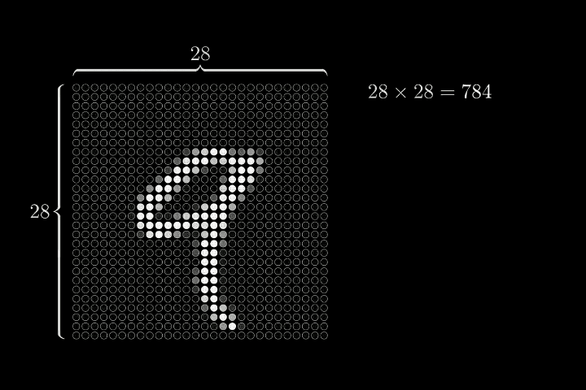
3. Network Architecture
Layers of a Neural Network
The MNIST digit recognition network has four layers:
- Input layer (784 neurons): One neuron per pixel.
- Hidden layer 1 (16 neurons): Learns low-level patterns (edges, strokes).
- Hidden layer 2 (16 neurons): Learns higher-level combinations.
- Output layer (10 neurons): One neuron per class (digits 0–9). Highest activation = prediction.
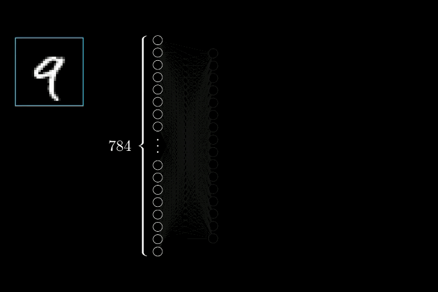
Role of Weights
- Positive weight: amplifies the signal (excitatory connection).
- Negative weight: suppresses the signal (inhibitory connection).
- Finding the right weights is the entire goal of training.
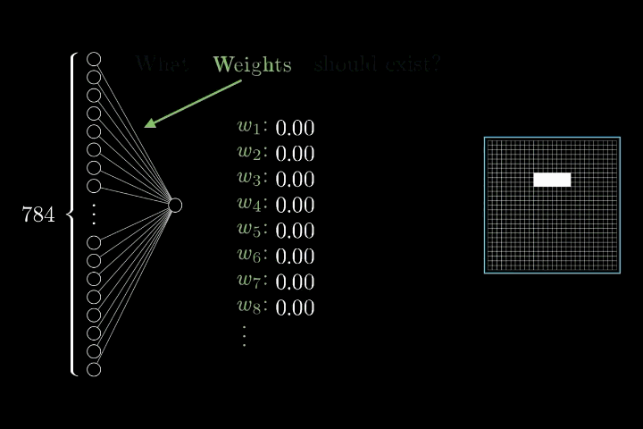
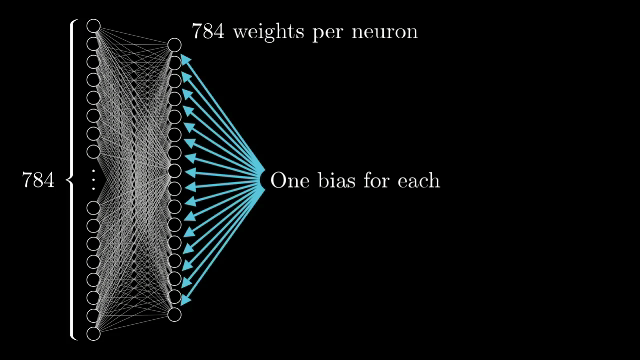
4. Activation Functions
Why Non-Linearity is Essential
This is a critical exam concept. If every neuron uses a linear activation $f(x) = x$, then no matter how many layers you stack, the entire network collapses to a single linear transformation:
Sigmoid
The S-shaped curve maps any input to $(0, 1)$. Useful for output layers requiring probability-like values.
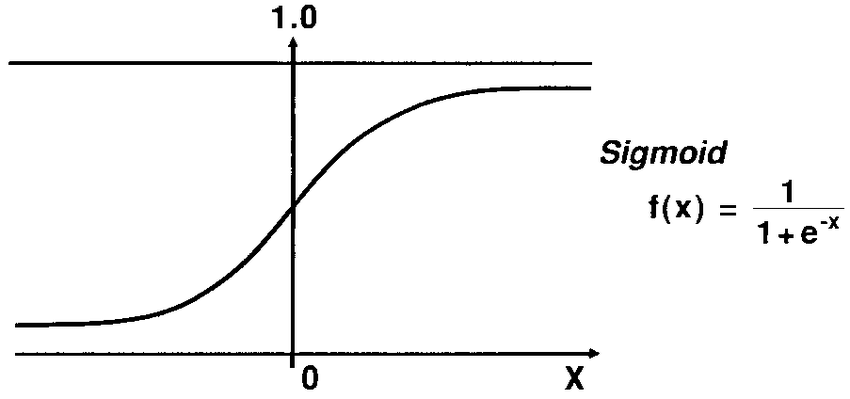
Starting from $\sigma(x) = (1 + e^{-x})^{-1}$, applying the chain rule:
$$\sigma'(x) = (-1)(1 + e^{-x})^{-2} \cdot (-e^{-x}) = \frac{e^{-x}}{(1 + e^{-x})^{2}}$$Note that $\frac{e^{-x}}{1 + e^{-x}} = 1 - \sigma(x)$ and $\frac{1}{1 + e^{-x}} = \sigma(x)$, therefore:
$$\sigma'(x) = \sigma(x) \cdot (1 - \sigma(x))$$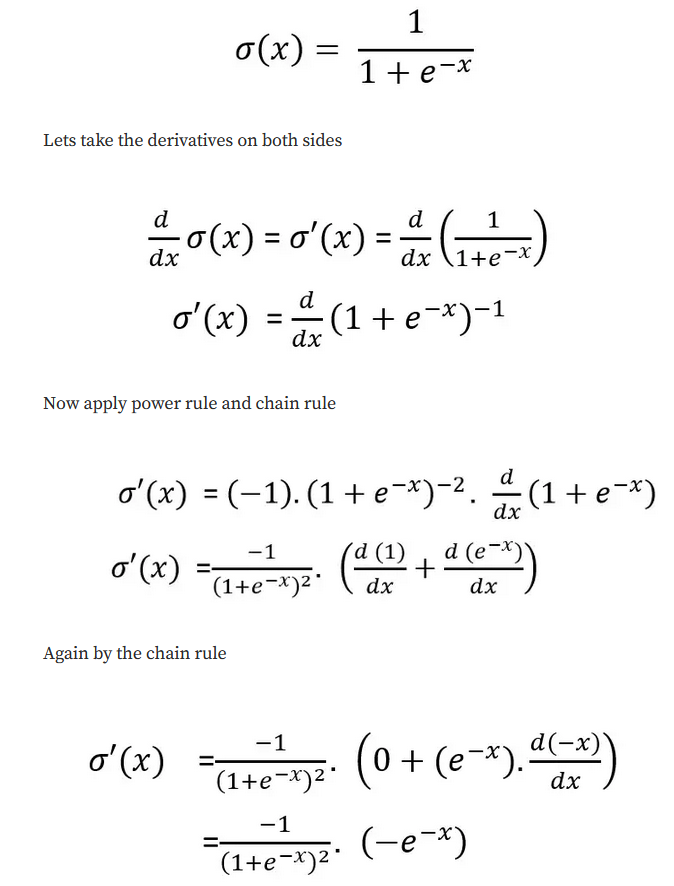
Drawback: The vanishing gradient problem — for very large or small inputs, the gradient approaches zero, slowing learning in deep networks.
ReLU (Rectified Linear Unit)
Advantages: Computationally efficient; does not saturate for positive values (no vanishing gradient on positive side); leads to sparse activations.
Drawback: "Dying ReLU" problem — neurons can become permanently inactive if they always receive negative input.
SoftPlus
A smooth, differentiable-everywhere approximation of ReLU. The most flexible shape for representing complex data distributions.
Comparison Table
| Function | Formula | Range | Key Property / Drawback |
|---|---|---|---|
| Linear | $f(x) = x$ | $(-\infty, +\infty)$ | Stacking layers is useless; no non-linearity |
| Sigmoid | $\sigma(x) = \frac{1}{1+e^{-x}}$ | $(0, 1)$ | Smooth S-curve; vanishing gradient |
| ReLU | $\max(0, x)$ | $[0, +\infty)$ | Fast and sparse; dying ReLU |
| SoftPlus | $\log(1+e^x)$ | $(0, +\infty)$ | Smooth ReLU approximation; differentiable everywhere |
5. Forward Propagation
Matrix Formulation
Instead of computing each neuron separately, an entire layer is computed at once using matrix multiplication:
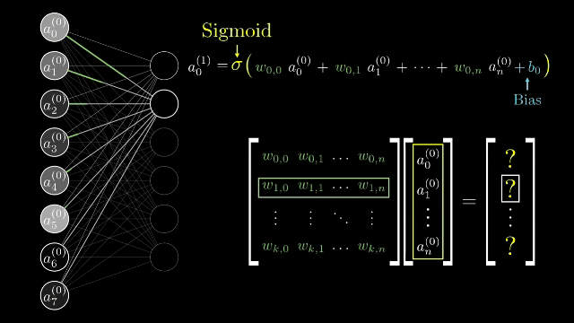
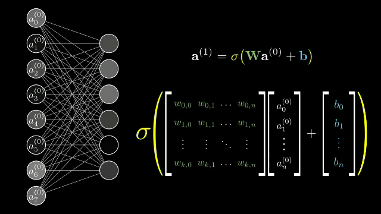
Inference (Test Time)
During inference, weights $w$ and biases $b$ are fixed. Only activations $a$ change with each input image. The process:
- Set first-layer activations from pixel values
- Propagate activations layer by layer: $\mathbf{a}^{(l)} = \sigma(\mathbf{W}\mathbf{a}^{(l-1)} + \mathbf{b})$
- Read output scores from the final layer
- Apply SoftMax to convert scores to probabilities
6. SoftMax and Output Interpretation
Raw output scores (logits) from the last layer can be any real number. SoftMax converts them to a proper probability distribution:
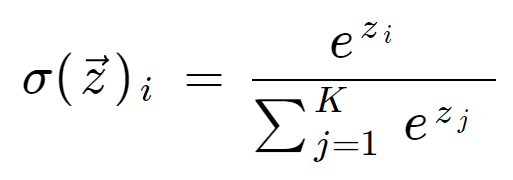
For a digit "3" input with raw score 1.77 (highest), SoftMax assigns 33% probability to class 3 — the network's prediction. Compared to simply taking the argmax, SoftMax provides calibrated confidence scores and smooth gradients for training.
7. Loss Functions
A loss function measures how wrong the network's predictions are. The goal of training is to minimize the loss.
Sum of Squared Errors (SSE)
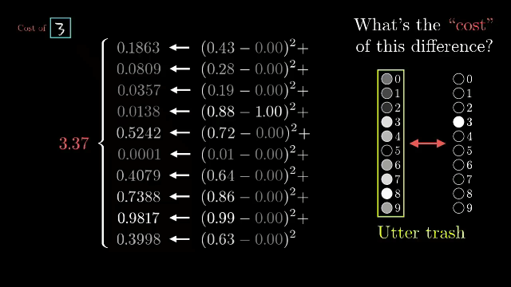
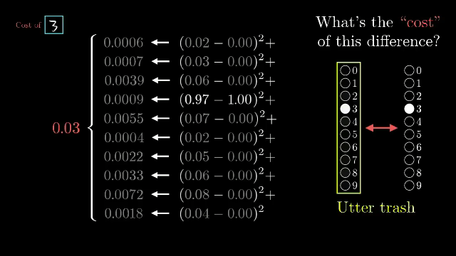
Cross-Entropy Loss
Example: digit "3" with SoftMax probability 0.33 for class 3:
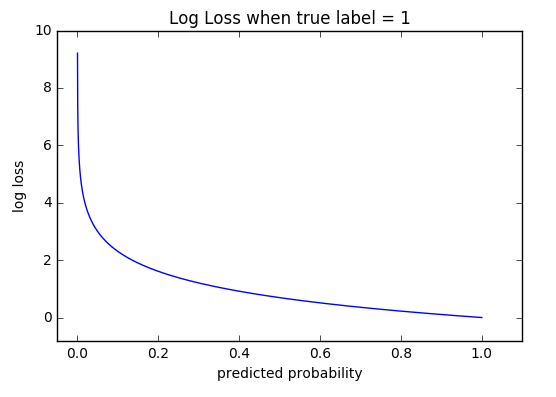
Why Cross-Entropy Over SSE?
| Property | SSE | Cross-Entropy |
|---|---|---|
| Gradient when very wrong | Moderate (quadratic) | Very large (logarithmic) |
| Focus | All output neurons equally | Only true class |
| Convergence speed | Slower | Faster (stronger correction signal) |
| Use case | Regression tasks | Classification tasks (standard) |
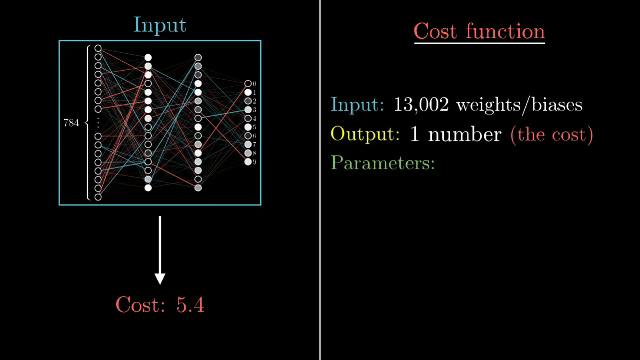
8. Gradient Descent
We cannot analytically minimize the loss (we only have data samples, not a closed-form equation). Instead, we use gradient descent — iteratively stepping in the direction that decreases the loss.
One Parameter
- Positive gradient: $w$ is too large; decrease it (step left)
- Negative gradient: $w$ is too small; increase it (step right)
- Zero gradient: at a minimum (or saddle point)
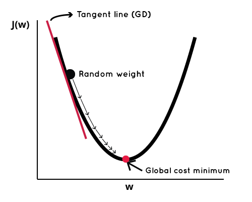
Problem: Predict pike fish length ($y$, meters) from weight ($a$, kg). Model: $\hat{y} = w \cdot a$.
Training data: Pike 1: (0.3 kg, 0.2 m), Pike 2: (0.6 kg, 0.4 m), Pike 3: (1.0 kg, 0.45 m). Learning rate $\eta = 0.18$, initial $w = 1$.
The derivative of SSE with respect to $w$: $\frac{d\,\text{SSE}}{dw} = -2a_1(y_1 - wa_1) - 2a_2(y_2 - wa_2) - 2a_3(y_3 - wa_3)$
| Iteration | $w$ | SSE | Gradient | Step | $w_{\text{new}}$ |
|---|---|---|---|---|---|
| 1 | 1.00 | 0.353 | 1.40 | 0.252 | 0.75 |
| 2 | 0.75 | 0.119 | 0.675 | 0.122 | 0.63 |
| 3 | 0.63 | 0.042 | 0.33 | 0.059 | 0.57 |
| 4 | 0.57 | 0.018 | 0.15 | 0.027 | 0.54 |
| … | … | … | … | … | 0.51 |
Converges to $w \approx 0.51$ with SSE $\approx 0.012$ and gradient $\approx 0$.
Two Parameters: The Gradient Vector
With model $\hat{y} = wa + b$, we compute partial derivatives forming the gradient vector:
$$\nabla \text{SSE} = \begin{bmatrix} \frac{\partial\,\text{SSE}}{\partial w} \\ \frac{\partial\,\text{SSE}}{\partial b} \end{bmatrix}, \quad \begin{bmatrix} w_{\text{new}} \\ b_{\text{new}} \end{bmatrix} = \begin{bmatrix} w_{\text{old}} \\ b_{\text{old}} \end{bmatrix} - \eta \cdot \nabla \text{SSE}$$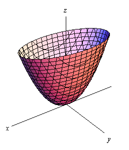
Many Parameters
In a real network with 13,002 parameters, the gradient vector has 13,002 components. Each component tells the sign and magnitude of the required update:
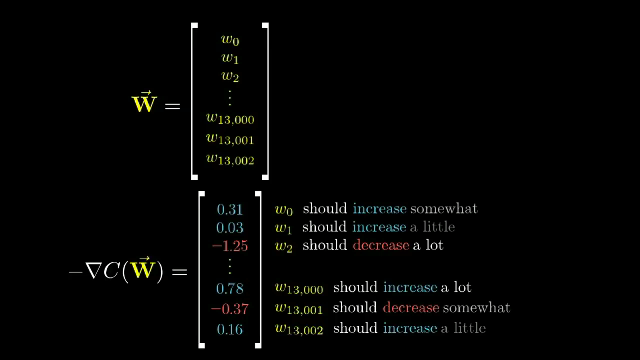
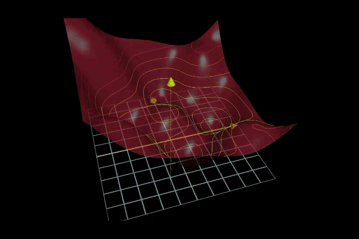
9. Error Backpropagation
In a deep network, weights in early layers affect all subsequent layers. We cannot compute gradients independently for each weight. Backpropagation is the efficient algorithm that solves this using the chain rule of calculus.
The Chain Rule
For a composite function $f(g(h(x)))$:
$$\frac{df}{dx} = \frac{df}{dg} \cdot \frac{dg}{dh} \cdot \frac{dh}{dx}$$In a neural network, the loss depends on the output, which depends on the pre-activation, which depends on the weights. Backpropagation applies this rule layer by layer, starting from the output.
Chain Rule Depths
| Weight | Chain Rule Decomposition | Terms |
|---|---|---|
| $w_5$ (output layer) | $\frac{\partial \mathcal{L}}{\partial y} \cdot \frac{\partial y}{\partial y_{\text{in}}} \cdot \frac{\partial y_{\text{in}}}{\partial w_5}$ | 3 |
| $w_1$ (hidden layer) | $\frac{\partial \mathcal{L}}{\partial y} \cdot \frac{\partial y}{\partial y_{\text{in}}} \cdot \frac{\partial y_{\text{in}}}{\partial h_1} \cdot \frac{\partial h_1}{\partial h_{1,\text{in}}} \cdot \frac{\partial h_{1,\text{in}}}{\partial w_1}$ | 5 |
Training Progress
After 100 backpropagation steps on the example network (target $t=0$):
| Step | $w_1$ | $w_5$ | $h_1$ | $h_2$ | $y$ |
|---|---|---|---|---|---|
| 0 | 0.15 | 0.90 | 0.79 | 0.99 | 0.73 |
| 1 | 0.07 | 0.84 | 0.70 | 0.98 | 0.69 |
| 5 | −0.12 | 0.70 | 0.42 | 0.98 | 0.65 |
| 20 | −0.71 | 0.58 | 0.02 | 0.99 | 0.32 |
| 100 | −1.86 | 0.57 | $2\times10^{-5}$ | 0.999 | 0.09 |
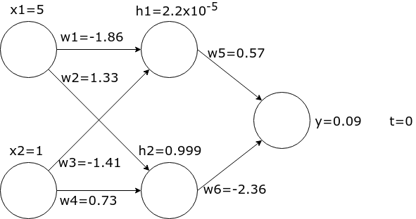
10. Training, Validation, and Testing Pipeline
Phase 1: Preparation
Split labeled data into three disjoint sets:
- Training set: Used to update weights via backpropagation.
- Validation set: Used to tune hyperparameters and detect overfitting. Never used to update weights.
- Test set: Used exactly once at the very end to report final performance.
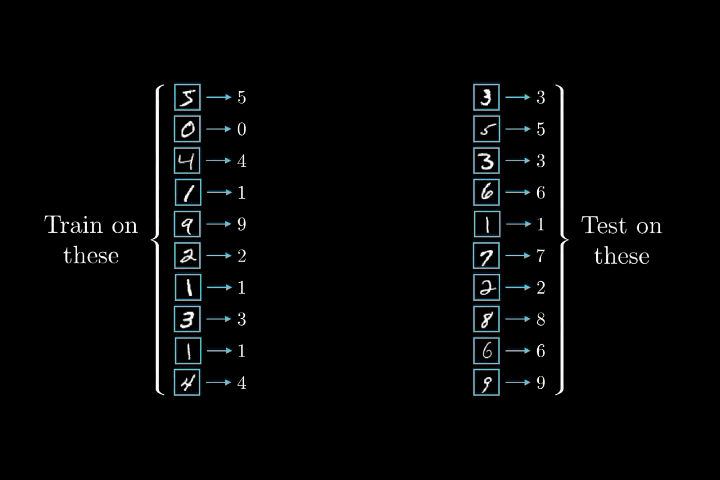
Phase 2: Training Loop
- Forward pass: Feed a batch of images, compute predictions.
- Compute loss: Compare predictions to ground-truth labels.
- Backpropagation: Compute gradients for all parameters.
- Update parameters: Apply gradient descent update rule.
- Repeat with the next batch.
- Validate every epoch; stop when validation loss converges.
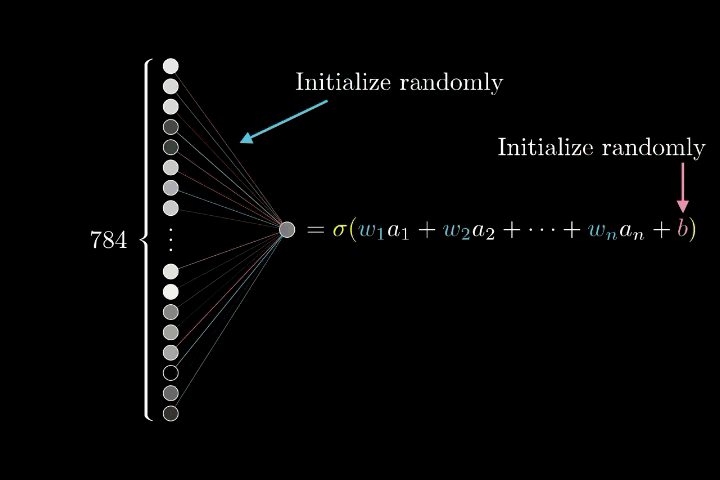
- Iteration: Processing one mini-batch of images.
- Epoch: One complete pass through the entire training dataset.
- Batch: A subset of training images processed together.
- Never train on validation or test data.
- Never select a model based on test performance — use validation only.
- The test set is used exactly once, at the very end.
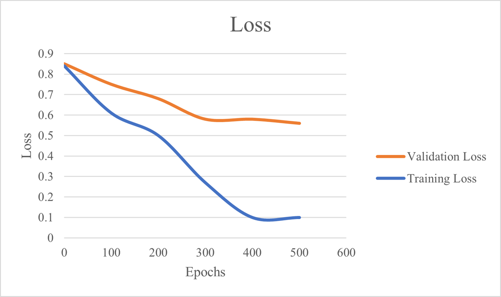
11. Overfitting and Underfitting
Recognizing the Scenarios
| Scenario | Training Loss | Validation Loss | Diagnosis |
|---|---|---|---|
| Good fit | Decreasing | Decreasing, stays close to train | Desired behavior |
| Overfitting | Keeps decreasing to near zero | Decreases then increases | Memorizing training data |
| Underfitting | High and not decreasing | High, not decreasing | Model too simple |
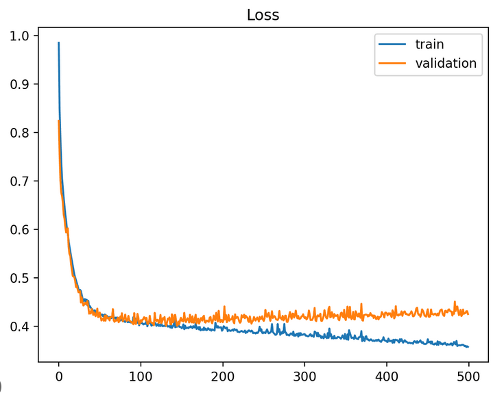
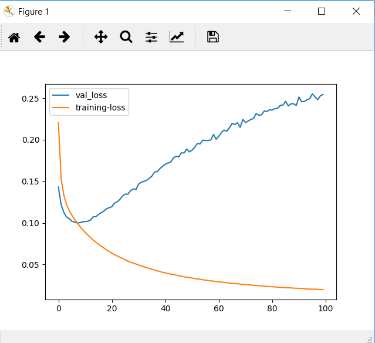
Bias-Variance Tradeoff
- High bias (underfitting): Model too simple; both train and validation loss are high.
- High variance (overfitting): Model too complex; train loss low, validation loss high.
- Goal: Find the sweet spot — complex enough to capture patterns, simple enough to generalize.
Remedies for Overfitting
- Early stopping: Halt training when validation loss starts increasing.
- Regularization: L1/L2 weight penalties, dropout.
- More training data: Reduces the chance of memorization.
- Simpler model: Fewer layers or neurons.
- Data augmentation: Artificially expand the training set.
12. Why Neural Networks Work: Hierarchical Feature Learning
Neural networks learn features in a hierarchical, composable manner:
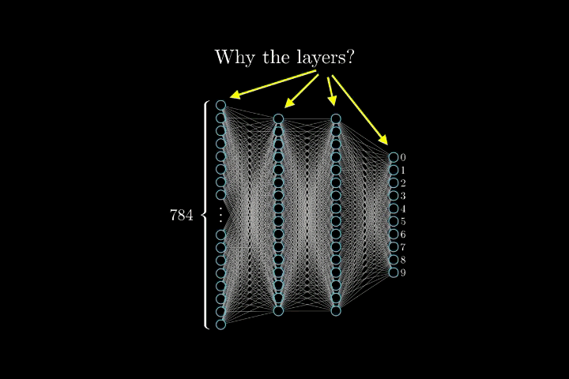
| Layer | What It Learns | Example (Digit Recognition) |
|---|---|---|
| First hidden | Small, simple patterns | Edges, corners, strokes |
| Middle hidden | Combinations of simple patterns | Curves, loops, sub-shapes |
| Later hidden | Large, complex patterns | Full digit components (loop of "9", vertical stroke) |
| Output | Combines high-level features | Final classification decision |